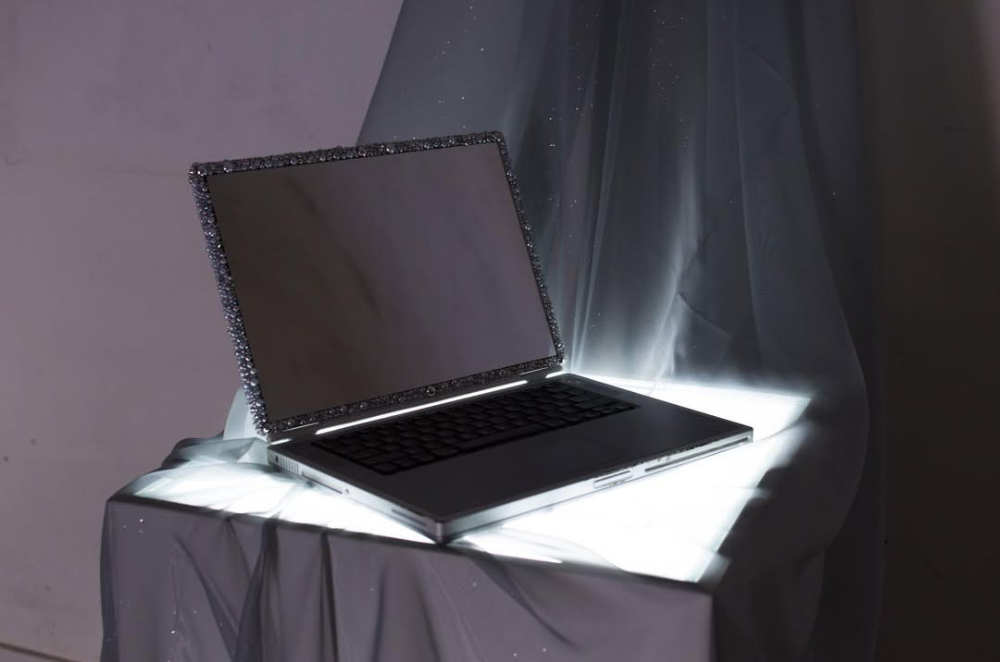
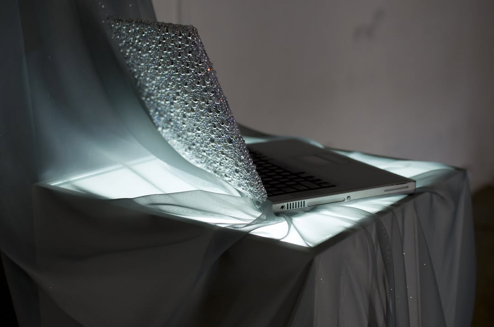

CONTINUUM
National Museum of Art of Guatemala (MUNAG)
Gemstones, laptop, mirror
Antigua, Guatemala, 2024
"Gems of Obsolescence" reimagines discarded technology as sacred relics of a rapidly aging digital era. A broken laptop, adorned with rhinestones and surrounded by mirrors, becomes an altar that questions our culture of constant technological replacement.
The installation transforms e-waste into a luminous, almost devotional object, inviting viewers to reflect on the environmental consequences and emotional attachments surrounding devices once deemed valuable.